w5 <<
Previous Next >> W6
SSH
確認star.bat啟動已經設定GIT_SSH變數，且與plink.exe連結
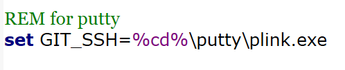
找到plink設定才有用，putty進行設定，puttygen建立鑰匙
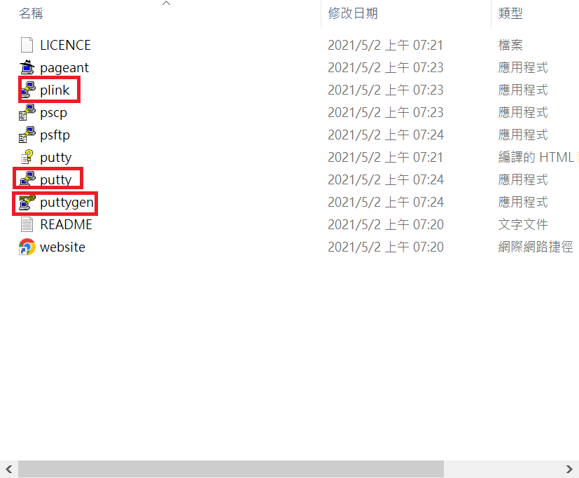
打開puttygen按下generate產生鑰匙，並複製鑰匙
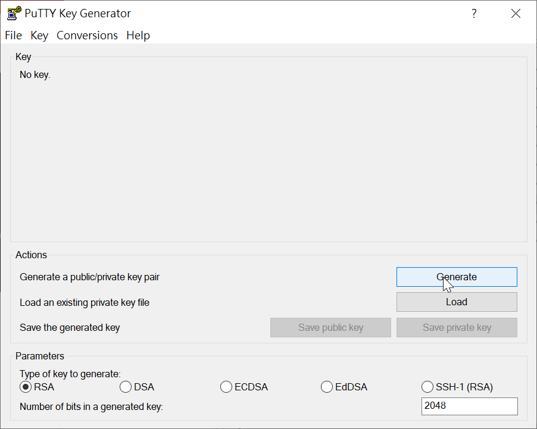
接著打開github，在帳號Settings下的SSH and GPG keys選擇new SSH key，貼在上面後點選Add SSH key，然後給它一個名稱
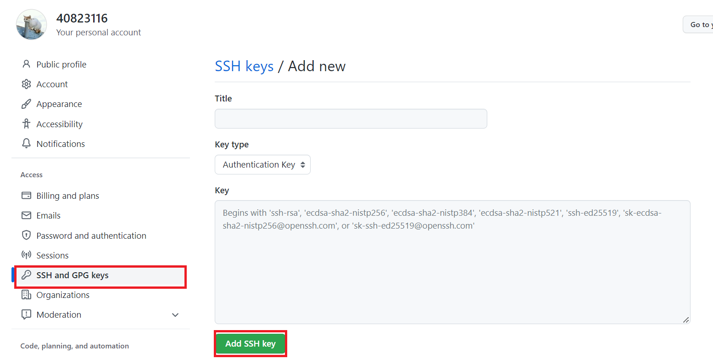
接著將key儲存到隨身碟的資料夾裡後就可以進入設定putty的部分
1連接到github.com並將埠號設為SSH的22，選擇SSH，並將session名稱設為學號
2看看是否在學校，在學校記得設置proxy
3在SSH下設置private key
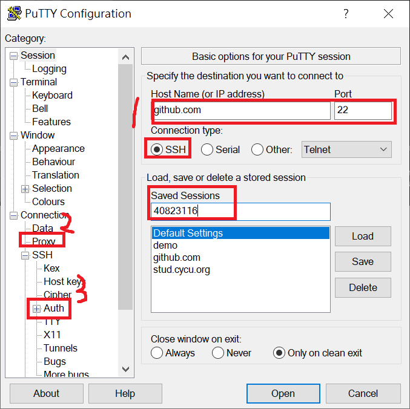
設定好後按下open，跑到這樣就是設定成功了
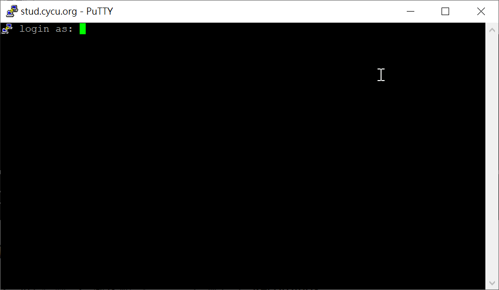
接著使用SSH的方式將倉儲clone下來隨身系統裡
使用 git clone --recurse-submodules git@your_github_session:mdecp2022/site-your_github_account.git 在 site-your_github_account 目錄中取下個人倉儲資料，cd至個人倉儲目錄，輸入cms執行動態網站
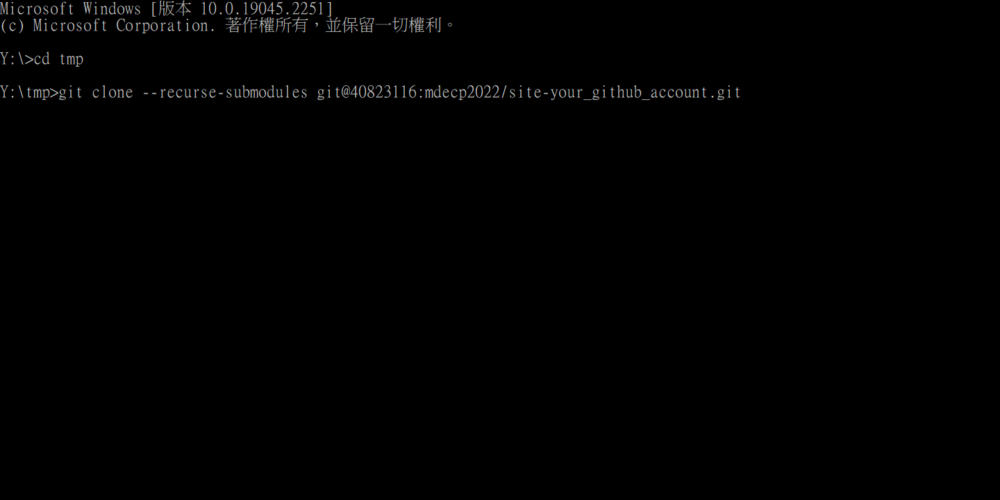
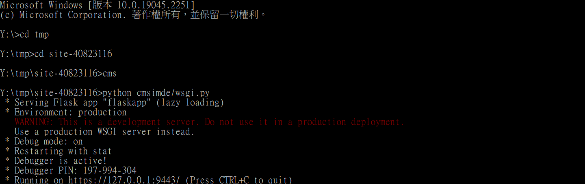
進入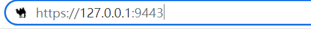
輸入密碼後就可以進入到動態網頁進行編輯
在Config裡面可可以更改title
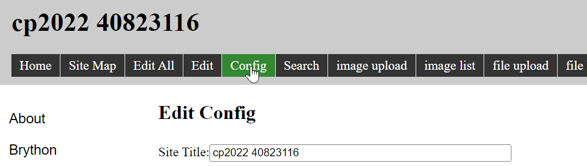
更新完網站後按下下方的save後按下generate_pages轉成靜態，在倉儲根目錄中執行 acp "提交說明字串" 後, 即可憑藉 SSH 的設定, 將改版內容提交推送到 Github 個人倉儲區。
使用靜態網頁中Brython所在的位置連結加上?src=再加上GITs編寫的程式產生的連結，就會的在靜態網頁的位置上顯示出所編輯得程式
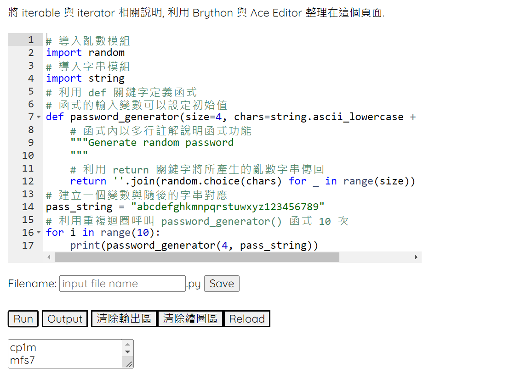
w5 <<
Previous Next >> W6